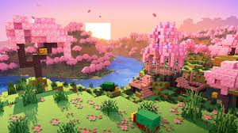
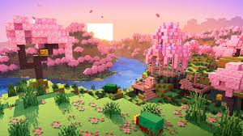

sobre o jogo
Minecraft é um jogo eletrônico sandbox de sobrevivência criado pelo desenvolvedor sueco Markus "Notch" Persson e posteriormente desenvolvido e publicado pela Mojang Studios, cuja propriedade intelectual foi obtida pela Microsoft em 2014. Lançado inicialmente em maio de 2009 como um projeto em desenvolvimento, seu lançamento completo ocorreu em 18 de novembro de 2011 para Microsoft Windows, macOS, Linux e alguns dispositivos móveis, sendo posteriormente relançado para uma ampla variedade de plataformas. É o jogo eletrônico mais vendido de todos os tempos, vendendo mais de 300 milhões de cópias em todas as plataformas até outubro de 2023, com mais de 140 milhões de jogadores ativos mensalmente.
È inffluente?
Minecraft é aclamado pela crítica, ganhando vários prêmios e sendo considerado como um dos melhores e mais influentes jogos eletrônicos de todos os tempos. As redes sociais, paródias, adaptações, mercadorias e convenções anuais de MineCon tiveram um papel fundamental na popularização do jogo. Também tem sido usado em ambientes educacionais, especialmente no campo de sistemas da computação, já que computadores virtuais e dispositivos de hardware foram construídos nele. Vários títulos spin-off também foram desenvolvidos, tais como Minecraft: Story Mode (2015), Minecraft Earth (2019), Minecraft Dungeons (2020) e Minecraft Legends (2023).